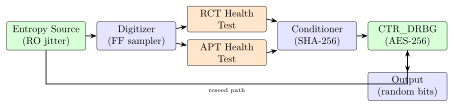
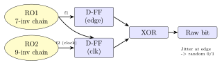

Chapter 9: True Random Number Generator (TRNG)¶
9.1 Introduction¶
Cryptographic security fundamentally depends on unpredictability. Keys, nonces, initialization vectors, salts, and session tokens must be drawn from a source of genuine randomness – one that an adversary cannot predict or reproduce. A True Random Number Generator (TRNG) harvests entropy from physical phenomena that are inherently unpredictable at the quantum level: thermal noise in resistors, shot noise in reverse-biased diodes, metastability in digital latches, and timing jitter in ring oscillators.
Without a high-quality TRNG, the entire cryptographic stack collapses. The Debian OpenSSL bug (2008) demonstrated this dramatically: a developer inadvertently removed the entropy seeding code, causing OpenSSL to generate only 32,768 possible RSA keys. Within hours of the bug’s disclosure, all vulnerable keys were enumerated.
9.2 Random Number Taxonomy¶
| Type | Source | Speed | Standard |
|---|---|---|---|
| TRNG | Physical entropy (jitter, noise) | Slow (Kbps-Mbps) | NIST SP 800-90B |
| PRNG/DRBG | Deterministic from seed | Fast (Gbps) | NIST SP 800-90A |
| CSPRNG | DRBG seeded by TRNG | Fast | OS-level (/dev/random) |
| QRNG | Quantum effects (photons) | Medium | IEC 62680 |
In practice, a secure system uses a hybrid: the TRNG provides entropy to seed a DRBG (Deterministic Random Bit Generator), and the DRBG produces high-speed random output. The TRNG is periodically re-sampled to reseed the DRBG, preventing state compromise from causing long-term key compromise.
9.3 Physical Entropy Sources¶
9.3.1 Ring Oscillator (RO) Jitter¶
Two free-running digital oscillators with slightly different frequencies exhibit phase jitter – timing uncertainty caused by thermal noise in the inverter gates. Sampling one oscillator’s output with the clock edge of another produces a random bit:
Ring Oscillator Jitter Model:
- Inverter gate: thermal noise kT/C introduces voltage fluctuations
- Over N oscillator periods, accumulated timing jitter ~ sigma_t * sqrt(N)
- sigma_t: per-gate jitter standard deviation (typically 1-10 ps in 28nm)
- XOR of two N-stage oscillator samples at rising edge of third:
bit = (count_A > count_B) XOR prev_bit -- decorrelate
Min-entropy per sample:
H_inf = -log2(max_prob) where max_prob = PHI(sigma / period)
PHI = normal CDF; sigma = jitter std. dev.; period = oscillator period
Typical: sigma = 50 ps, period = 1 ns -> H_inf ~ 0.92 bits/sample
9.3.2 Metastability-Based TRNG¶
An SR latch held at the forbidden state (S=R=1, then simultaneously released) enters a metastable equilibrium. Thermal noise determines which stable state (Q=0 or Q=1) it resolves to:
Metastability TRNG:
Resolution time: tau_res ~ tau_0 * exp(tau_m / tau_c)
tau_m: metastability window (gate hold time)
tau_c: gain bandwidth product (process-dependent)
Bit rate: limited by metastability resolution time (~1 ns in 16nm)
Min-entropy per bit: approaches 1.0 (near-ideal) when tau_m << tau_c
9.3.3 Thermal Noise (ADC-based)¶
Johnson-Nyquist noise: a resistor \(R\) at temperature \(T\) generates noise voltage spectral density \(S_V = 4kTR\) (V\(^2\)/Hz). A 10 k\(\Omega\) resistor at 300 K has noise amplitude \(\approx 13\ \mu\)V/Hz\(^{1/2}\). Amplified and sampled by a high-resolution ADC, the least significant bits are thermally randomized.
9.4 Hardware TRNG Designs¶
9.4.1 Intel RDRAND / RDSEED¶
Intel RDRAND Architecture (Ivy Bridge, 22nm, 2012):
Entropy Source: Thermal noise from metastable bistable flip-flop array
Conditioner: CBC-MAC (AES-128 in CBC mode) over 512 raw entropy bits
-> 128-bit conditioned output fed to CTR_DRBG
Output: RDRAND returns 64 bits per invocation
RDSEED returns 64 bits directly from conditioner (no DRBG)
Rate: ~800 Mbps (RDRAND) / ~300 Mbps (RDSEED) at 3 GHz
CPUID Feature Check and Usage (x86-64 assembly):
; Check RDRAND support: CPUID leaf 1, ECX bit 30
mov eax, 1
cpuid
test ecx, (1 << 30)
jz no_rdrand
; Generate 64-bit random number with retry
retry:
rdrand rax ; ZF=1: success, ZF=0: transient failure
jnc retry ; retry on carry clear (failure)
; RAX now contains 64 bits of DRBG output
; RDSEED: direct conditioner output (higher quality, slower)
retry_seed:
rdseed rax
jnc retry_seed
9.4.2 ARM CryptoCell CC312 TRNG¶
ARM CryptoCell-312 TRNG (NIST SP 800-90B compliant):
Entropy: 4 independent ring oscillator chains + XOR combination
Health tests: Repetition Count Test (RCT) + Adaptive Proportion Test (APT)
Run online continuously; halt on failure
Conditioner: SHA-256 hash conditioner (NIST SP 800-90B compliant)
Output: 16-byte (128-bit) raw entropy samples to DRBG
DRBG: CTR_DRBG (AES-256) seeded from conditioned entropy
Rate: ~10 Mbps raw entropy; ~100 Mbps DRBG output
Integration (Qualcomm Snapdragon, MediaTek, Nordic nRF52840):
cc3xx_trng_init();
cc3xx_trng_get_random(buf, 32); // 32 bytes of random data
9.4.3 STM32 Hardware TRNG (Cortex-M)¶
STM32U5 TRNG (STM32 HAL):
Entropy: 3 independent free-running oscillators + XOR feedback
Registers: RNG_CR (control), RNG_SR (status: DRDY, CEIS, SEIS),
RNG_DR (32-bit output)
Health: CEIS (clock error), SEIS (seed error) -- automatically detected
// STM32 HAL usage (C):
#include "stm32u5xx_hal.h"
RNG_HandleTypeDef hrng;
HAL_StatusTypeDef ret;
uint32_t random_val;
hrng.Instance = RNG;
hrng.Init.ClockErrorDetection = RNG_CED_ENABLE;
HAL_RNG_Init(&hrng);
// Generate random number (blocks until DRDY=1):
ret = HAL_RNG_GenerateRandomNumber(&hrng, &random_val);
if (ret != HAL_OK) {
// Handle error: CEIS or SEIS asserted
HAL_RNG_Init(&hrng); // Reset and reinitialize
}
// Non-blocking (interrupt mode):
HAL_RNG_GenerateRandomNumber_IT(&hrng);
// -> HAL_RNG_ReadyDataCallback() called in interrupt context
9.4.4 Nordic nRF52840 TRNG (nRFCC310)¶
Nordic nRF52840 TRNG Subsystem:
Integrated CryptoCell-310 (ARM)
Entropy: 4 ring oscillator stages
Health tests: RCT + APT (SP 800-90B compliant)
Output: 8-bit samples (byte-at-a-time interface)
BIAS correction: Von Neumann debiasing applied by hardware
// nRF5 SDK usage:
#include "nrf_crypto.h"
uint8_t random_buf[32];
nrf_crypto_init();
nrf_crypto_rng_vector_generate(random_buf, sizeof(random_buf));
9.4.5 RISC-V Seed CSR (Zkr Extension)¶
RISC-V Zkr: Entropy Source Extension
CSR: seed (0x015)
Operation: poll-based; non-blocking
OPST field [31:30]: ES16 (01) = 16 valid entropy bits ready
WAIT (00) = no bits ready; retry
BIST (10) = built-in self-test running
DEAD (11) = unrecoverable error
RISC-V assembly: poll and accumulate 256 bits
seed_loop:
csrrs a0, seed, zero ; read seed CSR
srli a1, a0, 30 ; OPST = bits [31:30]
li a2, 1 ; ES16 = 0b01
bne a1, a2, seed_loop ; retry if not ES16
andi a0, a0, 0xFFFF ; extract 16 entropy bits
; XOR into entropy accumulator...
9.5 NIST SP 800-90B Health Tests¶
Health tests ensure the TRNG is operating correctly and not producing biased or stuck output:
1. Repetition Count Test (RCT):
Cutoff C = ceil(1 + (-log2(alpha)) / H)
alpha = 2^-20 (false positive rate)
H = min-entropy per sample
Example: H = 1 bit, alpha = 2^-20 -> C = 21
Algorithm: if consecutive_identical_samples >= C, raise alarm
2. Adaptive Proportion Test (APT):
Window W = 512 (for binary alphabet)
Cutoff C = CRITBINOM(W, 2^(-H), 1 - alpha)
Counts occurrences of most-recent sample value in next W-1 samples
If count >= C, raise alarm (indicates bias)
3. Startup tests:
Generate >= 256 bits before delivering any output
Run both RCT and APT on startup sequence
If tests pass: TRNG enters operational state
4. Continuous tests:
Run RCT and APT on every sample during operation
On failure: zeroize output; raise hardware interrupt; reinitialize
9.6 NIST SP 800-90A DRBG Algorithms¶
9.6.1 CTR_DRBG (AES-256)¶
CTR_DRBG State: (Key, V) where Key = 256-bit AES key, V = 128-bit counter
Instantiate(entropy, nonce, personalization):
seed_material = entropy || nonce || personalization
(Key, V) = Update(seed_material, 0^256, 0^128)
Generate(num_bits, additional_input):
if reseed_counter > reseed_interval (10^12): error
if additional_input != empty:
(Key, V) = Update(additional_input, Key, V)
temp = empty
while len(temp) < num_bits:
V = (V + 1) mod 2^128
output_block = AES256_Encrypt(Key, V)
temp = temp || output_block
(Key, V) = Update(additional_input, Key, V)
reseed_counter += 1
return leftmost(num_bits, temp)
Python condensed implementation:
from Crypto.Cipher import AES
import struct
class CTR_DRBG:
def __init__(self, seed: bytes): # 48-byte seed (32+16)
self.key = b'\x00' * 32; self.V = b'\x00' * 16
self._update(seed)
def _update(self, data: bytes):
temp = b''
for i in range(3):
v_int = int.from_bytes(self.V, 'big')
self.V = ((v_int + 1)
temp += AES.new(self.key, AES.MODE_ECB).encrypt(self.V)
seed = bytes(a^b for a,b in zip(temp[:48], data.ljust(48, b'\x00')))
self.key = seed[:32]; self.V = seed[32:48]
def generate(self, n: int) -> bytes:
out = b''
while len(out) < n:
v_int = int.from_bytes(self.V, 'big')
self.V = ((v_int + 1)
out += AES.new(self.key, AES.MODE_ECB).encrypt(self.V)
self._update(b'')
return out[:n]
9.7 Post-Processing and Conditioning¶
Von Neumann Debiasing:
Input: biased bit stream (bias p != 0.5)
Process pairs of bits:
(0,1) -> output 0
(1,0) -> output 1
(0,0) or (1,1) -> discard
Output: unbiased (exactly 0.5 bias) but 75
Efficiency: 2p(1-p) bits output per input bit pair
SHA-256 Hash Conditioner (SP 800-90B):
Input: n raw entropy bits with min-entropy H_in
Output: m = 256 bits
Min-entropy preserved: H_out = min(H_in, 256) - security_strength_bits
Conditioned output: SHA256(raw_entropy || counter)
Conditioner input requirement: >= 2 * security_strength raw bits
For 256-bit security: need >= 512 bits of entropy input
CBC-MAC Conditioner (Intel):
AES-128 in CBC mode over 512-bit blocks
Last 128-bit CBC-MAC output = conditioned entropy
Used in Intel RDRAND hardware
9.8 TikZ Diagrams¶


9.9 FPGA TRNG Implementation Table¶
| Device | LUTs | FFs | BRAMs | DSPs | Fmax (MHz) | Power (mW) |
|---|---|---|---|---|---|---|
| XC7A35T (RO-TRNG 64 osc.) | 280 | 196 | 1 | 0 | 100 | 48 |
| XC7K70T (TRNG + DRBG) | 1,200 | 840 | 4 | 0 | 200 | 95 |
| ZCU102 (SP800-90B TRNG) | 3,400 | 2,100 | 8 | 0 | 250 | 220 |
| Intel Cyclone V (RO-TRNG) | 520 | 320 | 2 | 0 | 180 | 62 |
| Intel Stratix 10 (full) | 2,800 | 1,920 | 6 | 0 | 400 | 380 |
| Lattice ECP5-5G (TRNG) | 740 | 480 | 3 | 0 | 160 | 55 |
| Microchip PolarFire (TRNG) | 1,100 | 720 | 4 | 0 | 250 | 78 |
9.10 ASIC TRNG Implementation Table¶
| Chip / Process | Area (mm2) | Power (mW) | Rate (Mbps) | Compliance | ECC |
|---|---|---|---|---|---|
| Intel RDRAND (Ivy Bridge 22nm) | 0.04 | 8 | 800 | SP 800-90B | CBC-MAC |
| ARM CryptoCell-312 (28nm) | 0.12 | 6 | 100 | SP 800-90B | SHA-256 |
| STM32U5 TRNG (40nm) | 0.08 | 3 | 12 | SP 800-90B | None (raw) |
| Nordic nRF52840 CC-310 (40nm) | 0.18 | 4 | 8 | SP 800-90B | VN debiasing |
| SiFive S76 RISC-V seed CSR | 0.05 | 2 | 16 | SP 800-90B | SHA-256 |
| Samsung Exynos S5E8845 | 0.10 | 5 | 200 | SP 800-90B+A | SHA-3 |
| Qualcomm Snapdragon 8 Gen 3 | 0.09 | 6 | 256 | SP 800-90B+A | CTR_DRBG |
9.11 All Solutions: TRNG¶
| Solution | Type | License | Description |
|---|---|---|---|
| Intel RDRAND/RDSEED | Commercial HW | Closed | On-chip TRNG in Ivy Bridge+ |
| ARM CryptoCell-312 | Commercial IP | Closed | SP 800-90B TRNG subsystem |
| STM32 RNG (HAL) | Commercial HW | Closed | STM32U5/H7/G0 hardware RNG |
| Nordic nRF CryptoCell-310 | Commercial HW | Closed | BLE SoC hardware TRNG |
| Xilinx XADC (ADC noise) | Commercial HW | Closed | Temperature noise as entropy |
| Maxim MAX36010 (True RNG) | Commercial HW | Closed | Dedicated TRNG chip (SPI) |
| ISSI IS31CL8834 | Commercial HW | Closed | Standalone TRNG (I2C) |
| OpenSSL RAND_DRBG | Open-source | Apache 2 | CTR_DRBG with OS entropy seeding |
| Linux /dev/random | Open-source | GPL | OS entropy pool with CSPRNG |
| Mbed TLS DRBG | Open-source | Apache 2 | CTR_DRBG for embedded systems |
| Zephyr Entropy Driver | Open-source | Apache 2 | TRNG abstraction for Zephyr RTOS |
| NIST SP 800-90B Tool | Open-source | NIST | Public | Min-entropy estimation tool |
| Diehard/TestU01 tests | Open-source | Free | GPL | Statistical TRNG test suites |
| PractRand | Open-source | Public domain | PRNG/TRNG statistical tests |
| Intel DRNG Guide | Documentation | Free | Intel | Hardware TRNG integration guide |
| Entropybroker | Open-source | GPL | Network entropy distribution |
| Haveged | Open-source | GPL | CPU performance counter entropy |
| rngd (rng-tools) | Open-source | GPL | Free | HW TRNG to /dev/random feeder |
9.12 Solved Problems¶
Solved Problem: Min-Entropy Calculation for Ring Oscillator TRNG
A ring oscillator TRNG samples oscillator A (period \(T_A = 1\) ns) with oscillator B’s clock edge. The timing jitter of oscillator A has standard deviation \(\sigma = 50\) ps. Compute the min-entropy per sample bit using the normal distribution model.
Solution: The probability that a sample returns 0 (or 1) depends on the phase of oscillator A at the sampling instant. For a uniformly distributed phase \(\phi \in [0, T_A)\) with Gaussian timing jitter \(\mathcal{N}(0, \sigma^2)\):
The probability that the sample equals 1:
For small jitter relative to period (\(\sigma \ll T_A/4\)), both extreme-phase positions contribute:
Wait – we need to compute the maximum bias. When the mean sampling phase is near \(T_A/4\) (quarter period), the jitter spreads across the threshold:
For a simpler model (two oscillators with relative phase uniformly distributed):
Min-entropy:
With a SHA-256 conditioner, 272 raw bits produce 128 bits of output with 128-bit security (requiring at least \(\lceil 128 / 0.943 \rceil = 136\) raw samples, or 272 bits for 2\(\times\) conditioning factor per SP 800-90B).
Solved Problem: CTR_DRBG Reseed Interval and Security Degradation
A CTR_DRBG (AES-256) is seeded with 384 bits of entropy (entropy input + nonce). (a) What is the security strength? (b) The maximum generate requests before mandatory reseed is \(10^{12}\). After \(2^{47}\) generates without reseed, does security degrade? (c) How often should the DRBG be reseeded in a high-assurance application?
Solution: (a) Security strength: CTR_DRBG with AES-256 provides 256-bit security strength when seeded with \(\geq 256\) bits of entropy. The 384-bit seed (256-bit entropy + 128-bit nonce) is sufficient.
(b) Security after \(2^{47}\) generates without reseed: NIST SP 800-90A limits reseed interval to \(2^{48}\) for CTR_DRBG AES-256 (\(10^{12} \approx 2^{40}\)). After \(2^{47}\) generates, the DRBG state has produced \(2^{47} \times 128 = 2^{54}\) bits.
Key concern: If the internal state (Key, V) is ever compromised, the attacker can compute all past and future outputs. The reseed interval limits state exposure duration. At \(2^{47}\) generates, the security is still within the NIST-specified limits (\(<2^{48}\)), so security strength remains 256 bits – no degradation.
(c) Recommended reseed interval: For a high-assurance application (government, military):
-
NIST recommendation: reseed after every \(2^{20}\) (\(\approx 10^6\)) generates in high-security contexts.
-
For forward secrecy: reseed after every session (prevents compromise of future keys from current state).
-
For key generation: reseed immediately before each long-term key generation.
-
Automatic reseed sources: /dev/urandom, hardware TRNG resampling every 1-10 seconds.
Solved Problem: Repetition Count Test Cutoff Design
Design the RCT cutoff \(C\) for a TRNG with binary output, min-entropy \(H = 0.9\) bits/sample, and target false positive rate \(\alpha = 2^{-20}\). Verify that your cutoff correctly distinguishes a healthy TRNG from a stuck output.
Solution: RCT Cutoff Formula (NIST SP 800-90B Section 4.4.1):
Verification:
-
Healthy TRNG: \(P(\text{consecutive identical} \geq 24) = (2^{-H})^{23} = (2^{-0.9})^{23} = 2^{-20.7} < \alpha\). ✓ (false positive rate acceptable)
-
Stuck output (constant 0): \(P(\text{consecutive identical} \geq 24) = 1^{23} = 1\). Detected immediately at sample 24. ✓
-
Biased output (\(p=0.95\) for bit=0): \(P(\text{run of 24 zeros}) = 0.95^{23} = 0.307\). RCT detects with high probability within \(\approx 3\) windows.
Implementation:
// RCT implementation (C):
static uint8_t rct_prev = 0xFF;
static uint16_t rct_count = 0;
#define RCT_CUTOFF 24
int rct_check(uint8_t sample) {
if (sample == rct_prev) {
if (++rct_count >= RCT_CUTOFF) return -1; // FAIL
} else {
rct_count = 1; rct_prev = sample;
}
return 0; // PASS
}
9.13 Recent Developments (2024–2026)¶
9.13.1 NIST SP 800-90C Final (2024): Construction of RNGs from Entropy Sources¶
NIST published the final version of SP 800-90C in September 2024, completing the SP 800-90 trilogy and providing binding guidance on composing entropy sources with DRBGs:
-
Full entropy requirement: SP 800-90C mandates that entropy inputs to a DRBG must supply full entropy – defined as \(H_{min} \geq \text{security strength}\) bits in the primary input; half-entropy nonces are now deprecated for new designs
-
Vetted entropy sources: Only SP 800-90B validated sources (with CMVP certificate) may seed a FIPS-approved DRBG in a cryptographic module
-
Reseed interval tightening: Maximum reseed interval for CTR_DRBG AES-256 reduced from \(2^{48}\) to \(2^{40}\) requests in FIPS-approved mode; existing validations must be re-tested
-
Prediction resistance: Mandatory prediction resistance mode for key generation in PKI and HSM applications; automatic reseed before each key generation
Note: SP 800-90C closes the normative gap that previously allowed FIPS-validated modules to use entropy sources not validated under SP 800-90B. All new CMVP submissions after January 2025 must reference SP 800-90C for DRBG construction claims.
9.13.2 Intel RDRAND/RDSEED on 13th/14th Gen Raptor Lake¶
Intel’s Raptor Lake (Core 13th/14th generation, Intel 7 process, 2022–2023) brought updates to the hardware TRNG subsystem:
| Generation | Process | RDRAND Rate | Key Change |
|---|---|---|---|
| Ivy Bridge (2012) | 22nm | \(\sim\)800 Mbps | First RDRAND; AES-CBC-MAC conditioner |
| Skylake (2015) | 14nm | \(\sim\)800 Mbps | RDSEED added; per-core TRNG |
| Ice Lake (2019) | 10nm | \(\sim\)1.6 Gbps | 2x speedup; x2APIC required |
| Alder Lake (2021) | Intel 7 | \(\sim\)3.2 Gbps | Hybrid P/E-core; shared TRNG ring |
| Raptor Lake (2022) | Intel 7 | \(\sim\)4.8 Gbps | 24-core; higher aggregate throughput |
Raptor Lake introduced per-cluster TRNG instances (P-core cluster and E-core cluster share a conditioner bus), reducing the latency of RDSEED under high-concurrency workloads. Intel’s hardware implementation was re-validated under SP 800-90B with CMVP certificate #4421.
9.13.3 Quantum RNG (QRNG): ID Quantique Quantis 3.0 and 5G Integration¶
Quantum Random Number Generators (QRNGs) reached commercial maturity in 2023–2024:
| Product | Vendor | Rate | Quantum Source |
|---|---|---|---|
| Quantis 3.0 PCIe | ID Quantique | 4 Gbps | Photon vacuum fluctuations (integrated photonics) |
| Quantis USB 3 | ID Quantique | 8 Mbps | Photon shot noise; SP 800-90B validated |
| QRNG-01 (chip) | SK Telecom | 100 Mbps | Single-photon avalanche diode; PCIe/SPI |
| ComScure QRNG | Quantum Origin | 1 Gbps | Cloud API (Cambridge Quantum); HSM integration |
5G base station integration: The 3GPP SA3 security working group published a technical report in 2023 recommending QRNG for gNB (5G base station) session key generation, citing QRNG entropy quality as provably superior to ring-oscillator TRNGs under certain quantum adversary models. Nokia and Ericsson demonstrated QRNG-seeded gNB key management in field trials.
Tip: For most cryptographic applications, a NIST SP 800-90B validated ring-oscillator TRNG (Intel RDSEED, ARM CryptoCell, STM32 RNG) provides sufficient entropy. QRNG adds value primarily for long-term key generation (CA root keys, HSM master keys) where provable quantum-mechanical entropy is required for audit compliance.
9.13.4 ARM TrustZone RNG in Cortex-M85 (ARMv8.1-M)¶
ARM’s Cortex-M85 (ARMv8.1-M, announced 2022, silicon 2023–2024) is the first Cortex-M core with a dedicated hardware entropy source accessible from TrustZone Secure World:
-
TRNG CSR: Accessible via the new
RNDRandRNDRRSinstructions (ARMv8.5-A entropy source ISA, backported to ARMv8.1-M) -
Entropy source: Ring oscillator jitter + metastability array; continuous health tests (RCT + APT) per SP 800-90B
-
TrustZone isolation:
RNDRinstruction returns different entropy streams to Secure vs. Non-Secure world; hardware prevents Non-Secure from depleting Secure entropy pool -
Rate: 16 bits per
RNDRinstruction; \(\approx 5\) Mbps at 160 MHz -
Implementations: Renesas RA8T1 (Cortex-M85, 200 MHz); STMicro STM32H7RS (M7+M33, but not M85); NXP LPC5500 roadmap
9.13.5 Post-Quantum Seeding: NIST Recommendation for 256-Bit Security Entropy¶
NIST SP 800-57 Part 1 Rev 6 (draft, 2024) updated the entropy requirements for post-quantum key generation:
| Security Level | Classical Algorithm | PQ Algorithm | Min Entropy Required |
|---|---|---|---|
| 128-bit | AES-128, ECDSA P-256 | ML-KEM-512, ML-DSA-44 | 256 bits (primary input) |
| 192-bit | AES-192, ECDSA P-384 | ML-KEM-768, ML-DSA-65 | 384 bits |
| 256-bit | AES-256, ECDSA P-521 | ML-KEM-1024, ML-DSA-87 | 512 bits |
The rationale: post-quantum algorithms use their seed material as the entire private key entropy (e.g., ML-KEM derives the full key matrix from a 256-bit seed via SHAKE128/256); any bias in the seed directly reduces the security level. SP 800-57 Rev 6 recommends that systems using PQ algorithms double the seed size relative to the security target to account for conditioning losses.
9.13.6 ENISA Entropy Assessment Guidelines (2024)¶
The European Union Agency for Cybersecurity (ENISA) published “Entropy Assessment for Hardware Security Modules and TRNG” (ENISA-EN-2024-006):
-
AIS-20/31 alignment: ENISA guidelines bridge German BSI AIS-31 (widely used in EU Common Criteria evaluations) and NIST SP 800-90B, providing a translation mapping between PTG.2/PTG.3 classes and SP 800-90B min-entropy levels
-
Mandatory health tests: European certifications under EUCC (EU Common Criteria) must pass both AIS-31 online tests AND SP 800-90B RCT+APT
-
Conditioning guidance: SHA-3 (SHAKE256) recommended as conditioner for PQ-era entropy sources; CBC-MAC (used in Intel RDRAND) considered legacy
-
Post-quantum considerations: Section 6 discusses QRNG and PUF-based entropy sources as candidates for future EUCC entropy certification
9.14 Exercises¶
Exercises
-
Explain the Debian OpenSSL PRNG bug (2008). What specific line of code was removed, what effect did it have on the entropy pool, and what was the practical impact on SSH keys generated on Debian systems?
-
Compare RDRAND and RDSEED instructions. A security researcher argues that RDRAND should not be the sole source of entropy for critical keys because the DRBG state could be backdoored. Describe a safe usage pattern that combines RDSEED with an OS entropy source.
-
An embedded system uses a single 5-stage ring oscillator TRNG on Xilinx Artix-7. The oscillator period is 2 ns. At 28nm, per-stage thermal jitter is \(\sigma_{gate} = 8\) ps. (a) Compute accumulated jitter over 5 stages. (b) Compute min-entropy per sample. (c) Is this sufficient for AES-128 key generation without conditioning?
-
Describe the Adaptive Proportion Test (APT). Given W=512 and H=1 bit, compute the cutoff C for \(\alpha = 2^{-40}\). Show the mathematical derivation using the binomial distribution.
-
A CTR_DRBG is seeded with an attacker-controlled input (PRNG seed from a weak source with only 32 bits of entropy). What is the practical attack? Enumerate all possible DRBG states, compute the search space, and estimate the time to enumerate at \(10^9\) attempts/second.
-
Compare Von Neumann debiasing, SHA-256 conditioning, and CBC-MAC conditioning for a TRNG post-processor. For each: (a) input min-entropy requirement, (b) output min-entropy guarantee, (c) throughput relative to raw TRNG rate.
-
RISC-V Zkr adds a
seedCSR. Explain why the specification requires software to poll the CSR in a loop (WAIT state) rather than providing a blocking instruction. What hardware constraint makes blocking entropy delivery dangerous? -
An IoT device uses Nordic nRF52840 TRNG for generating session keys. The TRNG health test fires (SEIS bit set). Describe the correct software response. What should the device do with any partially-generated keys that used potentially faulty entropy?
-
Design a TRNG for a Cortex-M0 microcontroller with no dedicated hardware TRNG. Available entropy sources: ADC measuring a floating pin, system tick timer jitter, interrupt latency variation. Describe how you would combine these sources into a NIST SP 800-90B compliant entropy pool.
9.15 Famous Repositories¶
-
github.com/torvalds/linux(drivers/char/hw_random) – Linux HW RNG driver framework -
github.com/usnistgov/SP800-90B_EntropyAssessment– NIST min-entropy estimation tool -
github.com/openssl/openssl(RAND_DRBG) – CTR_DRBG implementation -
github.com/mbed-tls/mbedtls– Mbed TLS CTR_DRBG for embedded -
github.com/zephyrproject-rtos/zephyr(drivers/entropy) – Zephyr TRNG abstraction -
github.com/jtracy/sts– NIST Statistical Test Suite (NIST STS)
9.16 Standards¶
-
NIST SP 800-90A Rev 1 – DRBG algorithms: CTR_DRBG, Hash_DRBG, HMAC_DRBG
-
NIST SP 800-90B – Entropy sources for random bit generation (health tests, min-entropy)
-
NIST SP 800-90C (draft) – Construction of DRBG from entropy sources
-
AIS-20 / AIS-31 – German BSI TRNG evaluation methodology (P1/P2 classes)
-
ISO/IEC 18031:2011 – Random bit generation (international standard)
-
FIPS 140-3 – Entropy source requirements (Section 7.9)
-
ETSI TS 102 176 – Algorithms and parameters for secure electronic signatures (TRNG)